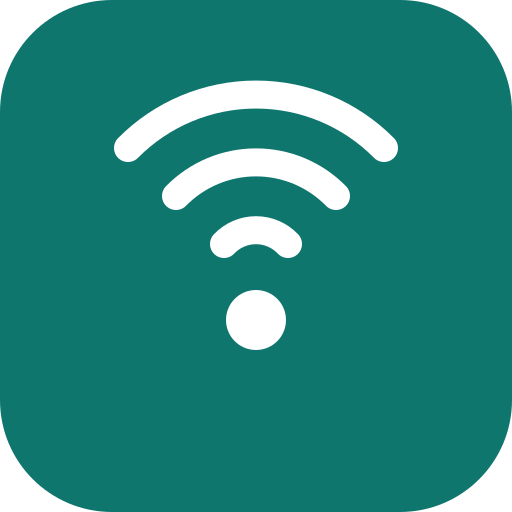

Skaneri
Pajisjet Bluetooth afër meje
📡
Shtyp butonin për të skanuar.
Pajisjet e gjetura0
Ende asnjë pajisje.
Si funksionon?
Skanim i vazhdueshëm dëgjon të gjitha pajisjet Bluetooth (BLE) përreth dhe tregon fuqinë e sinjalit dhe largësinë e përafërt. Te Chrome në Android duhet ndezur një herë:
chrome://flags/#enable-experimental-web-platform-features → Enabled.
Zgjidh një pajisje hap listën e Chrome me pajisjet afër. Kur zgjedh njërën, aplikacioni lidhet me të dhe lexon emrin, baterinë dhe prodhuesin (nëse pajisja i jep).
Largësia është vetëm një vlerësim nga fuqia e sinjalit – muret dhe trupi e ndryshojnë shumë.
Duhet ndezur Bluetooth-i dhe Vendndodhja (Location) në telefon.